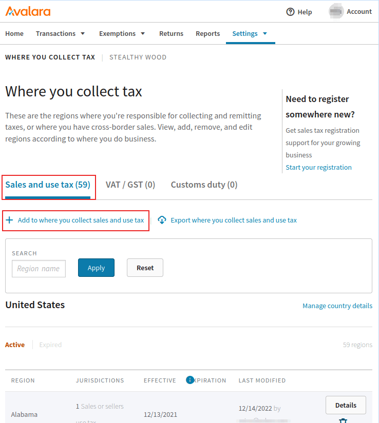

Portal de Avalara (AvaTax)¶
La consola de administración de Avalara (AvaTax) ofrece varias opciones para gestionar la cuenta, como la visualización y edición de las transacciones enviadas desde Odoo a AvaTax, los detalles sobre el cálculo de los impuestos y los reportes fiscales. Además, es posible gestionar las exenciones fiscales y consultar recursos relacionados con la declaración de impuestos.
Truco
Avalara es el desarrollador del software fiscal AvaTax.
Para acceder a la consola, primero vaya al entorno de prueba o de producción de Avalara. Esto dependerá del tipo de cuenta que haya configurado en la integración, después inicie sesión en la consola de administración.

Ver también
Consulte la documentación de Avalara para obtener más información: Active su cuenta del portal del cliente de comunicaciones.
Transacciones¶
Para acceder a las transacciones, haga clic en el enlace Transacciones del tablero principal al iniciar sesión en el Portal de Avalara (AvaTax). Vaya a para acceder de forma manual a la página de Transacciones luego de haber iniciado sesión en la consola de Avalara.

Editar transacciones¶
Haga clic en una transacción para abrir sus detalles, estos incluyen secciones como Detalles de la factura, Información adicional e Información del cliente. Haga clic en Editar detalles del documento para realizar modificaciones en la transacción.
Es posible agregar un descuento para ajustar la factura, estos son muy útiles cuando la transacción ya está sincronizada con Avalara / AvaTax y necesita hacer cambios después.
Filtro¶
En la página Transacciones podrá filtrarlas. Para ello, establezca los campos Desde y Hasta y configure otros campos para filtrar, por ejemplo:
Estado del documento: puede elegir entre las opciones Todos, Anulados, Confirmados, Sin confirmar y Bloqueados.
Código del documento: puede elegir entre las opciones Coincidencia exacta, Empieza con y Contiene.
Código del cliente o del proveedor: el código del cliente o del proveedor en Odoo (por ejemplo,`Contacto18`).
País: el país en el que se calculó este impuesto. Es un campo de texto.
Región: la región del país. Varía según el país que haya seleccionado.
Haga clic en icon:fa-plus Filtros para acceder a las siguientes condiciones de filtrado:
Tipo de documento: elija entre las siguientes opciones, estas son Todo, Factura de venta, Factura de compra, Factura de devolución, Factura de entrada de transferencia de inventario, Factura de salida de transferencia de inventario y Factura de aduanas.
ID de importación: representa el ID de importación del documento.
Ordenar por¶
En la página Transacciones estas aparecerán según el Filtro establecido que se encuentra en la mitad superior de la página. Las siguientes columnas están disponibles de forma predeterminada y puede ordenarlas de manera ascendente o descendente:
Código del documento: puede elegir entre las opciones Coincidencia exacta, Empieza con y Contiene.
Estado del documento: puede elegir entre las opciones Todos, Anulados, Confirmados, Sin confirmar y Bloqueados.
Código del cliente o del proveedor: este es el código del cliente o del proveedor en Odoo (por ejemplo,`Contacto18`).
Región: la región del país. Varía según el país seleccionado.
Importe: el importe numérico del importe total del documento de Odoo.
Impuesto: el importe numérico del impuesto aplicado al total.

Personalizar columnas¶
Puede agregar columnas adicionales al hacer clic en Personalizar columnas. Esta acción abrirá una ventana emergente, haga clic en el menú desplegable de la columna que debe modificar.
Es posible agregar las siguientes columnas para obtener más información sobre las transacciones:
Calculado por AvaTax: el importe del impuesto calculado por AvaTax.
País: el país en el que se calculó este impuesto. Es un campo de texto.
Código del cliente o del proveedor: el código del cliente o del proveedor en Odoo (por ejemplo,`Contacto18`).
Divisa: la abreviatura armonizada de la divisa correspondiente al importe total.
Fecha del documento: la fecha de creación del documento.
Estado del documento: puede elegir entre las opciones Todos, Anulados, Confirmados, Sin confirmar y Bloqueados.
Tipo de documento: elija entre las siguientes opciones, estas son Todo, Factura de venta, Factura de compra, Factura de devolución, Factura de entrada de transferencia de inventario, Factura de salida de transferencia de inventario y Factura de aduanas.
ID de importación: representa el ID de importación del documento.
Última modificación: marca de tiempo de la última vez que el documento fue modificado.
Código de la ubicación: el código de la ubicación utilizado para calcular el impuesto. Depende de la dirección de entrega.
Número de la orden de compra: el número de la orden de compra.
Código de referencia: el código de referencia de Odoo (por ejemplo, NV/2024/00003)
Región: la región del país. Varía según el país que haya seleccionado.
Código del vendedor: el ID numérico del usuario asignado a la orden de venta en Odoo.
Fecha del impuesto: el mes, día y año del cálculo del impuesto.
Tipo de anulación de impuestos: si debería aparecer una exención. Si no hay ninguna, complete el campo con Ninguno.
Haga clic en Columna para agregar una nueva.
Ver también
Consulte esta documentación de Avalara para obtener más información sobre las transacciones de AvaTax: Transacciones.
Importar y exportar¶
Vaya a la página Transacciones y haga clic en Importar transacciones o en Exportar transacciones para realizar alguna de estas dos acciones.
Reportes¶
Para acceder a los reportes vaya a en el menú superior de la consola de administración de Avalara y luego seleccione una de las pestañas de reportes disponibles: Reportes de transacciones, Reportes de obligaciones y declaraciones fiscales o Reportes de exenciones.
Truco
Además, existen las pestañas Favoritos y Descargas. La pestaña Favoritos incluye todas las configuraciones de reportes marcadas como favoritas por el usuario de Avalara. La pestaña Descargas cuenta con una vista de lista donde el usuario puede descargar los reportes de las transacciones de alto volumen creados en los últimos 30 días.
Elija la categoría del reporte y el nombre del reporte en la sección Seleccione un reporte.
Después, complete la sección Seleccionar detalles del reporte. Estas opciones varían según la pestaña que haya seleccionado con anterioridad.
Según el tamaño del reporte, las siguientes dos opciones estarán disponibles en la sección etiquetada como Seleccione el número aproximado de transacciones para su reporte: Crear y descargar el reporte al instante (para reportes pequeños) y Crear y descargar el reporte en segundo plano (para reportes más grandes). Seleccione una u otra dependiendo del volumen de transacciones correspondientes.
Por último, en la sección Vista previa e exportación del reporte, seleccione el tipo de archivo a descargar. Puede elegir entre .PDF o .XLS. También tiene la opción de previsualizar el archivo si hace clic en Vista previa.
Luego de realizar todas las configuraciones, haga clic en Crear reporte para descargarlo. Haga clic en Agregar este reporte a favoritos para guardar esta configuración en los favoritos del usuario.
Haga clic en Descargar después de crear el reporte, así descargará el archivo a su dispositivo.
Truco
Seleccione un reporte preconfigurado en la sección Utilizado con frecuencia del tablero de reportes.
Haga clic en la opción de Reportes en el menú superior de la consola de gestión de Avalara y deslícese hasta el final de la página.
Ver también
Agregar más jurisdicciones¶
Puede agregar más jurisdicciones (ubicaciones de impuestos) en la consola de gestión de Avalara. Vaya ya sea a un entorno sandbox o de producción de Avalara. Esto depende de qué tipo de cuenta configuró en la integración.
Después, vaya a (Dónde recolecta sus impuestos). Tendrá que seleccionar de entre tres pestañas diferentes, dependiendo de la necesidad de su empresa. La primera pestaña es Sales and use tax (impuestos de venta y uso), con la que se pueden recolectar impuestos para los Estados Unidos. Haga clic en Add to where you collect sales and use tax (agregar a donde recolecta impuestos de venta y uso) para agregar otra ubicación donde la empresa recolecta impuestos de uso y venta.
La segunda opción es la pestaña VAT/GST (IVA/Impuesto sobre bienes y servicios) donde puede seleccionar el icono Add a country or territory where you collect VAT/GST (agregar un país o territorio donde recolecta IVA/Impuesto sobre bienes y servicios) para agregar otro país o territorio donde la empresa recolecta IVA o impuesto sobre bienes y servicios.
Finalmente, hasta la derecha encontrará la pestaña Customs duty (impuesto de aduana) en la que podrá agregar un país en el que la empresa recolecta impuestos de aduana. Solo haga clic en el icono Add a country where you calculate customs duty (agregar un país donde se calcula el impuesto de aduana) debajo de la pestaña.
Certificado de exención de impuestos¶
Los certificados de exención de impuestos para los clientes se pueden agregar a la consola de gestión de Avalara para que AvaTax sepa qué clientes están exentos de pagar algunos impuestos en específico. Para agregar un certificado de exención vaya a . Aquí, haga clic en Add a certificate (agregar un certificado) para configurar una exención.
Advertencia
Se requiere una suscripción Avalara a Exemption Certificate Management (ECM) (Gestión de certificados de exención) para poder adjuntar imágenes de certificado y para estar listos para una auditoría. Para más información sobre cómo suscribirse a este servicio, visite Avalara.
Operaciones de fin de año¶
Los servicios de Avalara incluyen servicios de declaración de impuestos para cuando deba presentar los impuestos al final del año. Inicie sesión en el portal de administración para acceder al registro de servicios fiscales de Avalara. Después, desde el tablero principal, haga clic en Declaraciones. Avalara le solicitará al usuario que inicie sesión por motivos de seguridad y le redirigirá al portal de declaraciones.

Haga clic en Get started (Iniciar) para iniciar el proceso de devolución de impuestos. Para más información, vea la documentación de Avalara About Managed Returns (sobre la gestión de devoluciones).
Truco
También puede hacer clic en el botón (devoluciones) en el menú superior de la consola de gestión Avalara.